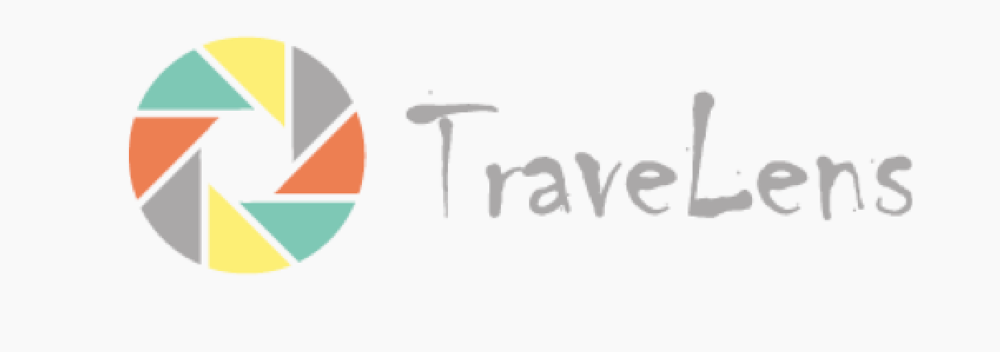
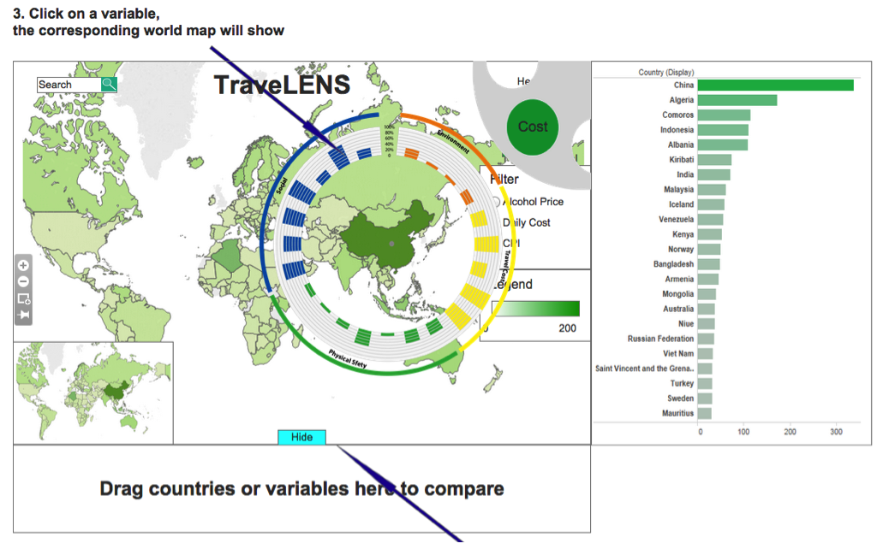
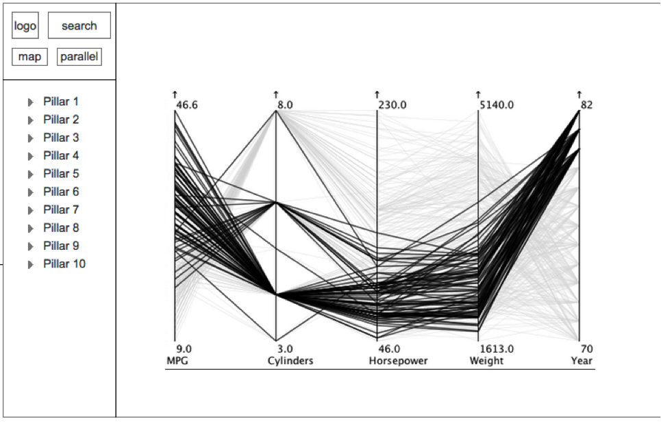

Support inquiry into factors underlying global tourist travel.
Team Role
- Interaction Designer
Duration
- September 2014 - December 2014
Project Description
TraveLENS is an interactive visualization tool that equips potential travellers with data and information across a wide range of risk factors that could influence in their decision-making process. The word ‘lens’ in the name is a metaphor for the main concept behind the tool. It is designed to let the users see and explore the world through different categories of lenses depending on their tasks and goals, and the visualization is designed to adapt and morph to fit the requirements of each category and to present that category’s information in the most effective and expressive way. For example, the Health lens visualizes vaccination requirements or food safety recommendations for travellers. Because the data is mostly relational in nature and less quantitative, we visualize the correlation with lines and arcs between entities. Another example would be the Safety lens where we visualize crime rates using choropleth, trend lines, or histograms. Similar to how you can combine multiple lenses and filters to create different views, the users of TraveLENS might combine multiple lenses to see correlations between various data sets. This concept of ‘lens’ is also a powerful reminder for us to focus on the visuals--the presentation and the perception of data--rather than the raw data itself.

Design Process
Stage 1
We began investigating data sets in health, traveler safety, weather and climate, and visa/documentation categories. These included Centers for Disease Control health warnings, country visa requirements compiled by other researchers (see References), U.S. State Department per diem allowances and cost of living estimates, and Pew Research survey data concerning attitudes concerning gender equality, religion, and LGBT issues as they pertained to travelers.

This was the first prototype we built according to the ideas from ideation. It used the choropleth as the main part, supplemented by the bar chart on the right which showed the ranking of the countries worldwide in the selected indicator, the circular bar chart (used the lens metaphor) that showed the scores of all the indicators of the selected country which would popped up when clicking on a specific country, and a comparison zone into which users could drag countries to compare them across all the indicators in bar charts. Aside from choropleth, the bar chart also played a crucial role in this version of prototype.
Stage 2

We revised our prototype by removing some mocked-up interactions for drag-and-drop country comparison and replacing the circular bar chart with parallel coordinates in a separate dashboard. We also experimented with radar charts to represent subcategory measures that made up the fourteen aggregates.
Stage 3

In the third version of design, we moved the parallel coordinates from the second tab to the main tab, in order to offer more insights using brushing and linking, and we added the scatterplot using the selected category as the x axis, the international tourism arrival as the y axis, and the area encoded the GDP/capita. On the bottom right, we added the comparison zone, the categories users chose would show up here and users could get a new tab comparing these categories.
User Research and Key Findings
Stage 1
User research at stage 1 was twofold: we used a survey to investigate which indicators describing destination countries were more important to users, and we used an HTML prototype created in Axure to gauge user reaction to the overall design goals of country comparison across aggregate rankings as well as the interaction design.
Users indicated that they were less influenced than we had expected by concerns about cultural differences in choosing a destination country. They indicated that climate and weather information, concerns about crime and physical safety, health problems/disease, and the perceived political stability of their travel destinations were stronger influences in their travel planning. More significantly, users had difficulty comparing different dimensions in the circular bar chart. They were confused by the visual proximity of aggregate dimensions that had no statistical relationship, and they (understandably) wanted to see what measures underlay the aggregates. Some users pointed out that the key indicators (for them) were missing, and wanted others. One reviewer also recommended a simpler design goal: create a visualization that simply helped users discover travel information and make travel decisions quickly, rather than investigate their decision-making.
Stage 2
At stage 2, We used the revised prototype for two semi-structured interviews. Our users were engaged by the overall project idea, but pointed out that their travel decisions were highly individual and situational. They valued city and regional information, and they wanted indicators that they perceived as predictive, whereas the data categories we visualized were abstract and descriptive. Our users remained interested in exploring a wide range of indicators about their travel destinations, but they didn’t confirm that the data we visualized influenced their actual travel planning. They wanted to see more general country information such as language, currency, and time zone, and they needed more supporting context before understanding how to use the parallel coordinates.
Stage 3
At stage 3, we conducted two rounds of task-based interviews with users and did some heuristic usability assessment. We confirmed that users understood the main idea of the tool, could explore the data categories, and could perform at least some discovery tasks.
- We found that users needed help recognizing subordination in the data (distinguishing topic categories and their scores from the subcategory measures).
- We needed to clarify units of measure on all parallel coordinate axes, and provide detailed descriptions of subcategory measures.
- Users didn’t always recognize that the the heatmap reflected aggregate scores for the categories.
- Users had various reactions to our implementation of multiple selection; the most important issues were difficulty distinguishing between lines and making individual selections (in parallel coordinates) and value labeling for multiples.
- Users responded to the “profile recognition” aspect of using parallel coordinates, but had the typical difficulty examining relationships between axes that weren’t adjacent.
- Users looked for an interactive legend for data display and selection, and expected to be able to interact with the choropleth legend as well.
- Users were interested in a quick tutorial function.